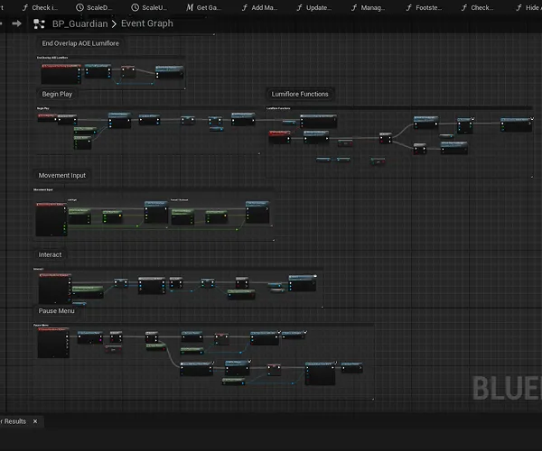
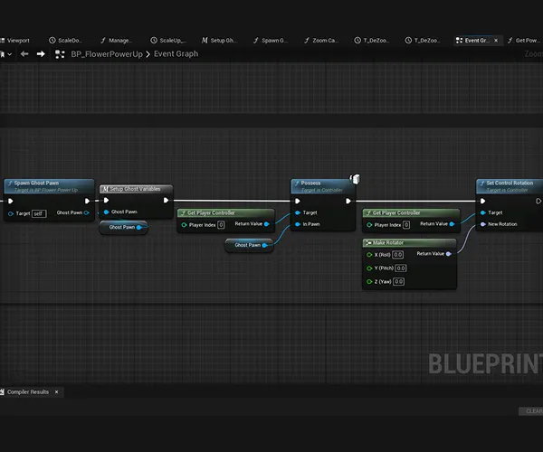
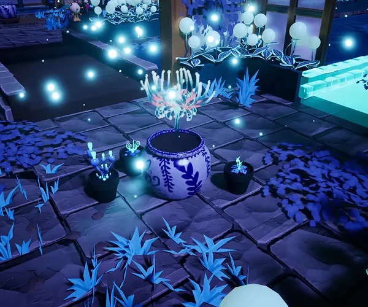

Character controller
En tant que programmeur, j’ai développé le character controller isométrique, en assurant des déplacements fluides sans gestion de sauts. J’ai également ajusté le comportement de la caméra et itéré sur le système jusqu’à obtenir un controller stable et fonctionnel.

System de Power Up
J’ai ensuite conçu le système de power-ups basé sur trois fleurs offrant des pouvoirs distincts. J’ai mis en place une architecture permettant des transitions fluides entre les états et une interaction cohérente avec le personnage et l’environnement. Le système reposait sur un event dispatcher, utilisé pour notifier les objets concernés lors des changements de pouvoir.

Fleur éthéralys
J’ai développé la mécanique de la fleur éthéralys, basée sur un système de projection d’esprit avec changement d’état du personnage. Cette fonctionnalité permettait le déplacement d’une entité détachée, capable d’ignorer certaines collisions, d’interagir avec des objets ciblés et de déclencher une téléportation via un pot récepteur. J’ai géré la synchronisation entre le corps et l’esprit, la gestion des collisions spécifiques et les transitions d’états associées.